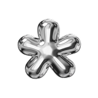

Hi, I'm Diana Tiart

Product designer with 5 years building end-to-end AI products: research, design systems and, increasingly, the product strategy behind them.
Product Strategy
Startups
AI Products
UX Research
Prototyping
01
 Design background
Design background
I studied graphic design at Kazan Federal University, then moved into product and UX. I wanted more say in what got built, not just how it looked.
Graphic designProductUX
02
Teaching and agency work
UX educator at EveryOneCanCode, then DockYard, where I led design across four client accounts, including the early iAsk AI account.
2021 – 20244 client accounts
03
iAsk AI, 2024 – 2026
Senior Product Designer. I owned the design direction across research, search, iOS and the design system ten engineers build on.
200K+users moved into multi-question sessions
10K+iOS downloads in 90 days
Work Experience

iAsk AI, Chicago
Mar 2024 – Aug 2026
Senior Product Designer
- Owned all design at iAsk: research, features, design system and mobile. Daily searches grew from 1M to 1.5M.
- Redesigned the search flow after analytics and 8 usability sessions showed users dropped off after the first question: 200K+ users moved into multi-question sessions.
- Designed the iOS app from scratch under Apple HIG: 10,000+ downloads in the first 90 days and a new acquisition channel.
- Built the design system for 10 engineers across web and iOS: handoff went from 3 revision rounds to 1.
- Used Claude to explore directions faster and cut a 2-week ideation phase to under a week. The landing page redesign got direct positive feedback from a major investor.
- Ran weekly product discovery and presented recommendations directly to leadership.

DockYard, Remote
May 2022 – Mar 2024
Product Designer
- Led end-to-end design on 4 client accounts, each from discovery to production handoff.
- Redesigned the iAsk search UX and landing page, and designed the Stripe subscription flow and paywall for iAsk Pro.
- Audited 4 product surfaces for Kamana and replaced 3 competing visual languages with one accessible design system: the platform doubled its user base and ARR over 17 months.
- Mapped the creator partnership flow for Currō, found where users dropped off and shipped the redesign in a 6-week sprint. The screens were used in investor demos.

EveryOneCanCode, Chicago
Apr 2021 – May 2022
UX Designer
- Restructured the student portal (navigation, onboarding, course discovery, project submission) and reduced drop-off between signup and the first completed course.
- Ran a full visual redesign: new color system, typography and UI components, so the product looked like one consistent brand.
- Built a web-ready component library in Figma that cut back-and-forth with developers in handoff.
- Taught UX workshops to 50+ students across multiple cohorts.
How I Work
My approach
Research first
Every project starts with interviews, usability tests, or analytics, not assumptions.
End-to-end ownership
Often the only designer on a project, so I carry it from discovery through UI, prototyping, and testing myself.
Product thinking
I care about the trade-offs and prioritization behind a feature as much as the pixels.
Systems, not one-offs
I build design systems that keep design and engineering in sync, not just individual screens.
Fast iteration
Scope it down, prototype it, test it, then make it better, especially with AI tools speeding up the loop.
Cross-functional by default
Close collaboration with engineering and leadership so nothing gets designed in a vacuum.
Stay Organized
How I organize my work
Backlog
3
Design review
Low
Update style guide
Medium
Prep client call
High
In Progress
2
Wireframe new flow
Medium
Usability test synthesis
High
Go ahead, drag them around. I like my work organized, even down to the portfolio.